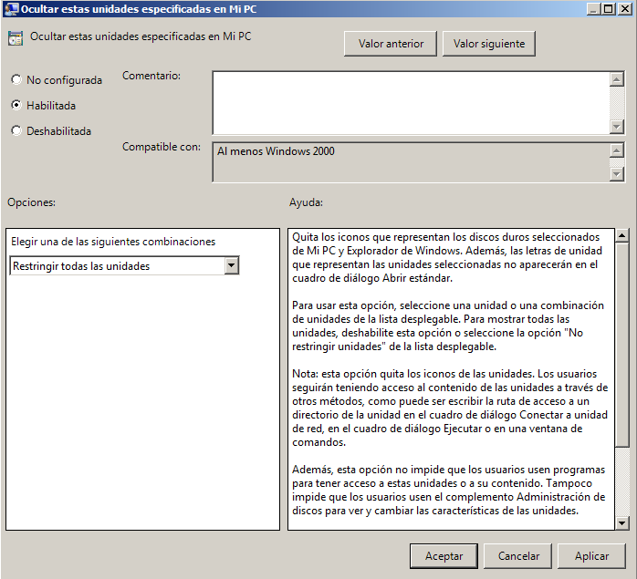

- Módulo: Sistemas Operativos
- Título del trabajo Políticas o directivas de grupo
- Componentes del grupo: Carlos Santos
- Curso Académico: 2013/2014
- Fecha de entrega: Mayo de 2014
Como primer paso tenemos que ir al inicio --->Herramientas administrativas ---> Usuarios y equipos de active directory y creamos dos unidades organizativas,una jedi y otra sith. a continuación metemos los usuarios de cada grupo en su correspondiente unidad organizativa.
Ahora vamos a inicio --->Herramientas administrativas --->Administracion de directivas de grupo y creamos los siguientes GPOs dentro de cada unidad organizativa.
Seguidamente editamos cada GPO,realizamos los pasos que nos indican en la practica.
Quitamos el menú Ejecutar del menú Inicio.
Prohibimos el acceso al Panel de control.
Ocultamos el icono Mis sitios de red del escritorio.
Quitamos el icono Mis sitios de red del menú Inicio.
Ocultamos las unidades específicas en Mi PC.
Quitamos “Conectar a unidad de red” y “Desconectar de unidad de red”.